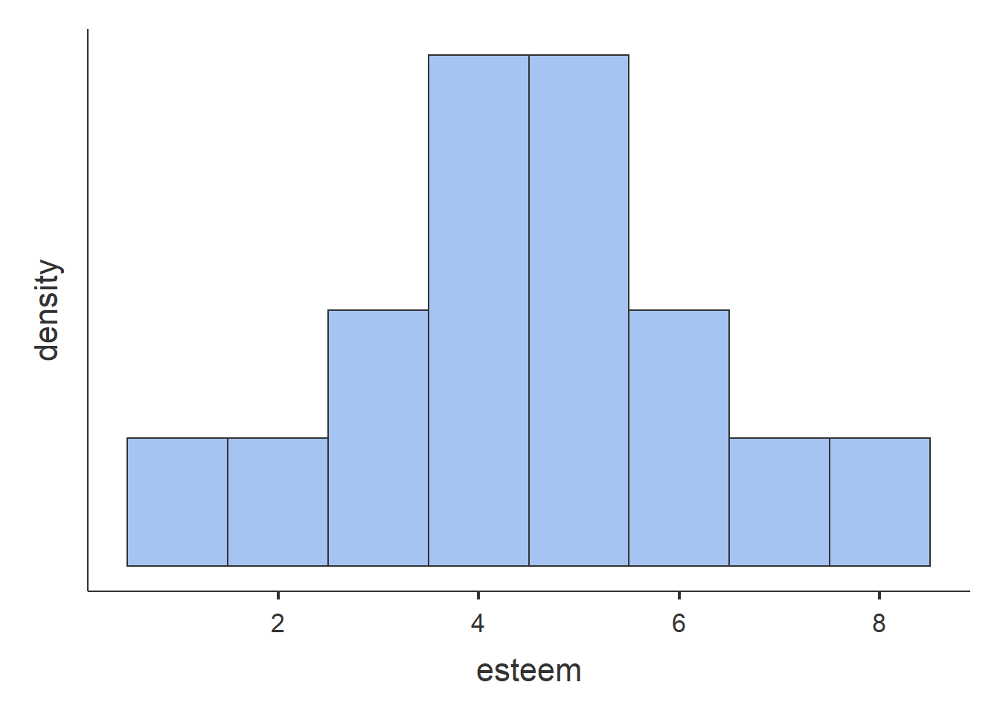

LO1: Understand the difference between population and sample
Population vs. Sample
Population: the entire set of individuals, or events, of interest in a particular study (Often not feasible!) Sample: set of individuals selected from a population
Example:
A psychologist wants to determine whether a motivational program is effective in improving work performance in Australian office workers.
- Population: Every Australian office worker
- Problem?: Not feasible, and not sure if it works yet.
- Solution: Select a sample from the population Sample (e.g., 100 workers from each state)
- Generalise: Results from the sample (100 workers from each state) back to the population of interest (Every Australian Office Worker)
LO2: Distinguish between parameters and statistics
Parameter: a value that describes a key characteristic of the population, such as:
- Average income of all Australians
- Average age of all Australians
Statistic: a value that describes a key characteristic of the sample, such as:
- Average IQ of a sample of 1000 Australian Uni Students
- Average Age of a sample of 1000 Australian Uni Students
\(\bigstar\) Statistics are used to estimate values that exist in the population.
LO3: Distinguish between descriptive and inferential statistics
As a researcher, you have:
- Decided on a research question: Is a new anti-depressant effective at reducing depressive symptoms?
- You’ve taken a sample of individuals to answer your research question: 100 individuals with depression
- Conduct your experiment
- 50 given the new anti-depressant
- 50 given the pre-existing best seller
- Measure depression levels after (0-100)
- You’ve collected your data. Now what??
Statistics is the method of using mathematics to organize, summarise, and interpret numerical data
Two main types:
Descriptive statistics:
- Simply used to describe data (Weeks 1 and 2)
- Summarize data
- Averages, score ranges etc.
- Makes data manageable
Inferential statistics:
- Used when we want to answer research questions (Week 3 onwards)
- Allows us to make generalizations from our sample to our population of interest
LO4: Distinguish between discrete and continuous variables
- Before we can answer our research questions we need data
- Data is obtained by measuring specific variables of interest to your research question
- Variable: a characteristic or condition that changes or has different values for different individuals (Previous example: Depression, Age, etc.)
Discrete data
- Contain only a small number of values, such as:
- handedness (right/left/ambidextrous)
- favourite season (summer/autumn/ winter/ spring)
- Often referred to as Categorical data
Continuous:
Contain many different values - Weight (40kg- 140kg), age (0-100 years) - Often referred to as Measurement data - Often depends on the way you set up the measurement - Anxiety levels of HPS201/771 students
Discrete or continuous?
- Generally continuous – score on an anxiety questionnaire
- Questionnaire scores range from 0-60
- But, often people will be categorised into groups:
- High anxiety (41-60), Average anxiety (21-40), Low anxiety (0-20)
- This is a discrete variable
Why does it matter?
The type of data that you use will impact the types of statistical approach that we use to analyse data
- Continuous/Measurement data are usually summarised using means (averages)
- Mean age of HPS201 students is 19.8 (made up)
- Mean height of AFL footballers is 188cm
- Discrete/Categorical data are usually summarized using percentage
- 15% of participants were left-handed, 75% right-handed, 10% ambidextrous
- 32% of students have black hair, 8% have red hair, 50% have brown hair, 5 % have blonde hair, 5% other
LO5: Explain the difference between categorical data and measurement data
The type of data that you use will impact the types of statistical approach that we use to analyse data.
Continuous/Measurement data are usually summarised using means (averages)
- Mean age of HPS201 students is 19.8 (made up)
- Mean height of AFL footballers is 188cm
Discrete/Categorical data are usually summarized using percentage
- 15% of participants were left-handed, 75% right-handed, 10% ambidextrous
- 32% if students have black hair, 8% have red hair , 50% have brown hair, 5 % have blonde hair, 5% other
LO6: Distinguish between independent and dependent variables
Independent variable (IV):
- The variable that we manipulate
- As a researcher, we believe that the IV will effect our dependent variable
Dependent variable (DV):
- The variable that we measure
- The variable that is observed for differences/changes
Quiz time!
A researcher wanted to test her theory that people tend to walk faster on cold days compared to hot days…
Independent variable?
Dependant variable?
Quiz time!
A psychologist wants to investigate whether caffeine improves attention. She gives different amounts of caffeine (low or high) to the research participants and then measures their attentional capacity…
Independent variable?
Dependant variable?
LO7: Understand the different types of measurement scales (nominal, ordinal, interval and ratio)
We measure our IV and DV’s using a variety of measurement scales:
- Nominal: consist of a set of categories with different names in no ordered sequence
- Handedness:
- Right, Left, Ambidextrous
- No category is higher/lower, better/worse than any other as they are just labels for different categories
- Ordinal: Ordinal scales consist of a set of categories with different names AND are organized into an ordered sequence
- Highest level of academic qualification:
- High School Incomplete
- High School Complete
- Diploma
- Bachelor Degree
- Masters Degree
- PhD
- Interval: Consist of ordered categories where the intervals are exactly the same size
- The distance between each value is the same along the scale
- Usually have a more data points than ordinal scales (continuous data)
- No absolute zero point
- Degrees Celsius
- Distance between 10-15 degrees is the same as the distance between 30-35 degrees
- Zero degrees does not represent the absence of temperature. It is just a point on the temperature scale
- Ratio: Consist of ordered categories where the intervals are exactly the same size
- The distance between each value is the same along the scale
- Usually have a more data points than ordinal scales (continuous data)
- With a true zero point
- Time (minutes)
- length (cm)
L08: Understand how to construct frequency distributions and histograms
Frequency distributions report how often each score was recorded in a given data set. When presented in table form, a frequency distribution lists all values for a variable along with the frequency of each.
For example, imagine a researcher obtains the following self-esteem scores from 16 people (measured as a continuous variable ranging from 0–10):
5 1 3 4 5 6 2 5 5 4 7 4 4 8 6 3
esteem <- c(5,1,3,4,5,6,2,5,5,4,7,4,4,8,6,3)
jmv::descriptives(
vars = esteem,
freq = TRUE,
desc = "rows",
hist = TRUE,
n = FALSE,
missing = FALSE,
mean = FALSE,
median = FALSE,
sd = FALSE,
min = FALSE,
max = FALSE)
##
## DESCRIPTIVES
##
## FREQUENCIES
##
## Frequencies of esteem
## ──────────────────────────────────────────────────
## Levels Counts % of Total Cumulative %
## ──────────────────────────────────────────────────
## 1 1 6.25000 6.25000
## 2 1 6.25000 12.50000
## 3 2 12.50000 25.00000
## 4 4 25.00000 50.00000
## 5 4 25.00000 75.00000
## 6 2 12.50000 87.50000
## 7 1 6.25000 93.75000
## 8 1 6.25000 100.00000
## ──────────────────────────────────────────────────

The frequency table above helps to summarise the collected data, allowing us to easily see the number of participants recording each score. We can also gather from this table the highest concentration of results towards the centre of the table (those who answered 4 or 5).
The histogram is a graphical representation of the data in the frequency table. A larger data set may be most relevant when the results are grouped together (known as a bin), while smaller data sets can simply be plotted as collected. Grouping data in bins assists in reducing the number of ‘random’ results and to assist in identifying trends.
LO9: Understand positive skew, negative skew and kurtosis
Bimodal: A frequency distribution is said to be bimodal when the majority of results are visible at 2 clear peaks in the data being presented.
Negatively Skewed: A greater number of people have scored at the high end of a scale.
Positively Skewed: A greater number of people have scored at the low end of a scale.
Kurtosis: refers to the peaks of the recorded variable (platykurtosis or leptokurtosis).